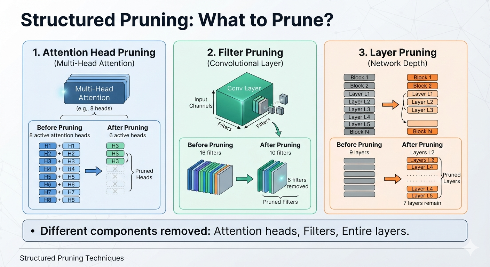
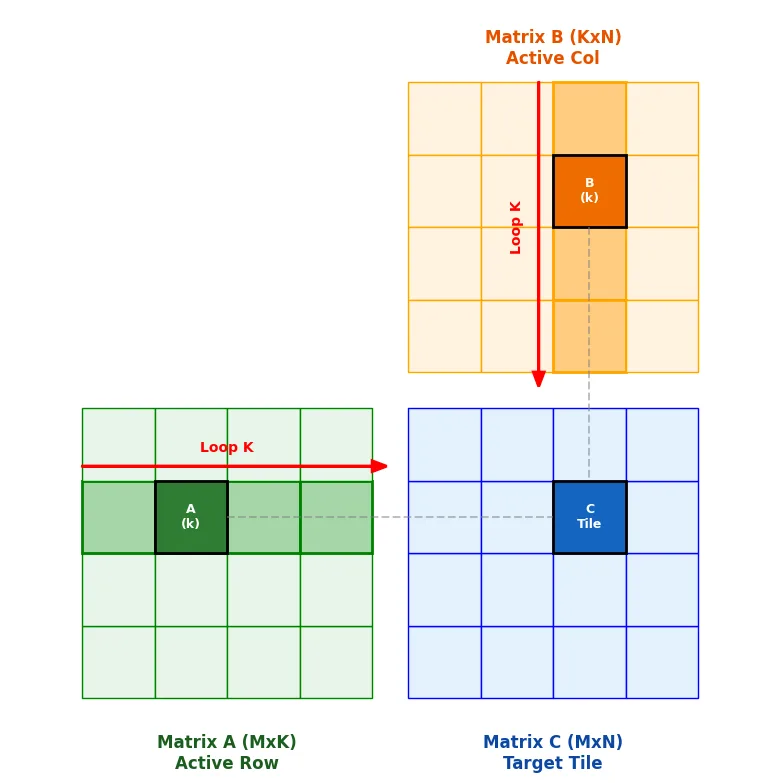
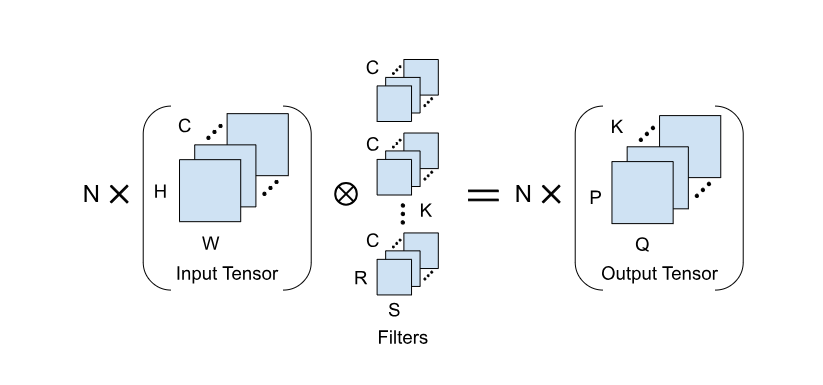
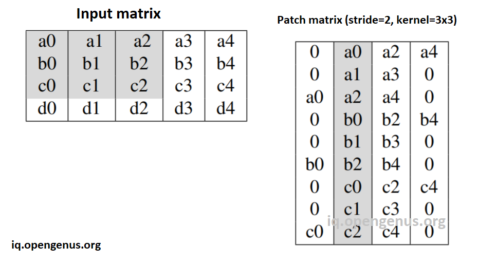
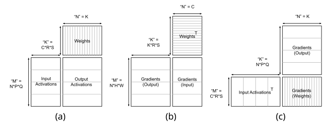
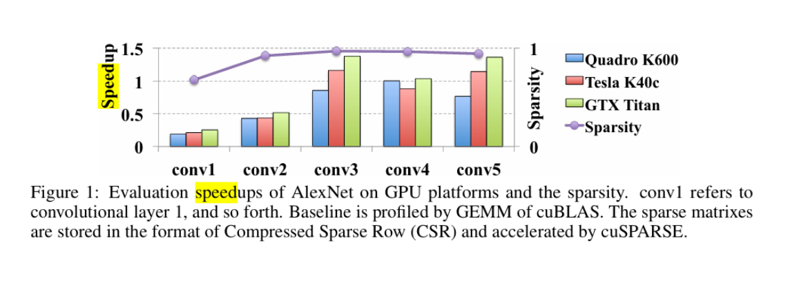
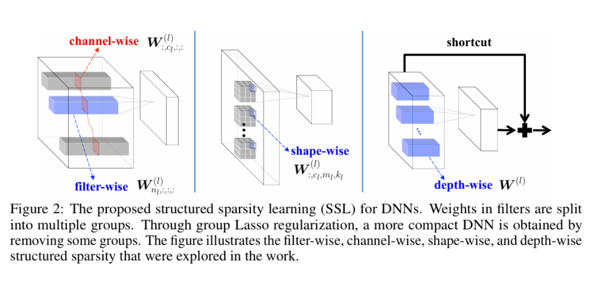

Many thanks to all the resources listed in References on the main
website. Almost all figures are taken from these resources; some
were generated with Gemini. Some images are taken from Google
Images and still need proper citation (in progress).
Logistics : Audit
Currently 8 Students are enrolled for auditing the class
Audit Students are expected to attend all classes (slack = 3 classes).
Sign in sheet from next class (TA)
Logistics: Seminar
Seminar starts on 21st August 2026
Seminar will happen on every Friday.
Groups will be created by TAs. We will announce the groups in the next class.
First Seminar is on Sparse Attention(Decoding)
Logistics: Exams
Exams are more of a tool to encourage engagement
Seminar is part of the syllabus. Projects are part as well.
If you are attending classes and following them, you should be good for exams
Logistics: Project
Hope you have started working on your projects!
Submission portal opens next week and first leaderboard will be released a week after that.
Assignment 1: Get on the leaderboard : Make a submission (no memory constraint)
Grade: 1% of the entire grade (taken from project )
Deadline: 14th August 2026
Logistics: Project Evaluation
Compression of Interest: $10\%, 20\%$ and $40\%$ of BF16 checkpoints
if a Submission has memory $k\%$ it goes in all heads that are larger than $k$
One example from : Sparse GPU Kernels for Deep Learning Gale.et.al
Getting speedups is HARD
As GPU hardware improves, dense GEMMs are super optimized for. Gets even difficult.
Promise of Structured Sparsity
Reduce the "shape" of the workload
reuse existing optimized dense kernels
Challenge: Maintaining Quality

Pruning a Linear layer -- a hardware friendly way

Pruning a Linear layer -- a hardware friendly way
Look at the algorithm where weight is used and make sure that the sparsity does not break contiguous memory access or add any overheads
FLOPS reduction should lead to actual reduction of steps in existing kernels.
Pruning a Linear layer : a hardware friendly way
Neuron / Channel pruning: Remove columns/rows to reduce the shape of the workload
Block Sparsity: Ability to skip certain "blocks" in computing the matrix multiplication — block-wise sparsity
Pruning a convolution : a hardware friendly way

Pruning a convolution : a hardware friendly way

Im2col and GEMM implementation of convolution (#channels = 1)
Pruning a convolution : a hardware friendly way

How to prune? (General Recipe for Groups)
Train a dense network to convergence.
Compute the saliency score of each group of weights
Remove group with the smallest saliency scores (or multiple, with / without adjustment of others)
Retrain the pruned network.
Return to step 2 (iterate until target sparsity).
How to prune?
Extend OBS (sim. OBD) to get saliency and update rule for groups of weights? (Exercise)
Iterative Magnitude Pruning (IMP) can be extended to groups of weights through l_p norms
The $\ell_p$ norm of a weight vector $w$ is defined as:
$\displaystyle \| w \|_p = \left( \sum_{i=1}^{n} |w_i|^p \right)^{1/p}$
While training, you can use group wise $l_p$ regularizer to induce group sparsity.
Results from the paper
“Learning Structured Sparsity in Deep Neural Networks” by Wen et al.
Unstructured sparsity does not show speedups on CPUs / GPUs

Even at high sparsity, irregular sparse execution can be slower than
dense GEMM because storage and indexing overheads dominate.
Structured pruning for CNNs

(Exercise) In GEMM Implementation how do these pruning granularities reduce workload?
Experimental setup
Three-step scheme:
Train with group regularization.
Prune groups with the lowest magnitude.
Fine-tune the remaining network.
Reported speedups are layer-wise and measured on CPU unless specified.
LeNet: filters, channels, and filter shapes
Table 1 — Penalizing unimportant filters and channels
LeNet #
Error
Filter #
Channel #
FLOP
Speedup
1 (baseline)
0.9%
20–50
1–20
100%–100%
1.00×–1.00×
2
0.8%
5–19
1–4
25%–7.6%
1.64×–5.23×
3
1.0%
3–12
1–3
15%–3.6%
1.99×–7.44×
Table 2 — Learning filter shapes
LeNet #
Error
Filter size
Channel #
FLOP
Speedup
1 (baseline)
0.9%
25–500
1–20
100%–100%
1.00×–1.00×
4
0.8%
21–41
1–2
8.4%–8.2%
2.33×–6.93×
5
1.0%
7–14
1–1
1.4%–2.8%
5.19×–10.82×
Structured groups preserve LeNet accuracy while reducing layer FLOPs
substantially and reaching up to 10.82× measured speedup.
MLP and ConvNet structured sparsity
Figure 4(a) — Learned neurons in MLP
MLP #
Error
Neurons per layer
FLOP per layer
1 (baseline)
1.43%
784–500–300–10
100%–100%–100%
2
1.34%
469–294–166–10
35.18%–32.54%–55.33%
3
1.53%
434–174–78–10
19.26%–9.05%–26.00%
Table 3 — ConvNet on CIFAR-10
ConvNet #
Error
Row sparsity
Column sparsity
Speedup
1 (baseline)
17.9%
12.5%–0%–0%
0%–0%–0%
1.00×–1.00×–1.00×
2
17.9%
50.0%–28.1%–1.6%
0%–59.3%–35.1%
1.43×–3.05×–1.57×
3
16.9%
31.3%–0%–1.6%
0%–42.8%–9.8%
1.25×–2.01×–1.18×
Learned structure cuts MLP FLOPs and accelerates ConvNet layers
without degrading—and sometimes improving—test error.
AlexNet on ILSVRC 2012
Table 4 — Sparsity and speedup
#
Method
Top-1 err.
Statistic
conv1
conv2
conv3
conv4
conv5
1
ℓ₁
44.67%
sparsity
67.6%
92.4%
97.2%
96.6%
94.3%
CPU ×
0.80
2.91
4.84
3.83
2.76
GPU ×
0.25
0.52
1.38
1.04
1.36
2
SSL
44.66%
column sparsity
0.0%
63.2%
76.9%
84.7%
80.7%
row sparsity
9.4%
12.9%
40.6%
46.9%
0.0%
CPU ×
1.05
3.37
6.27
9.73
4.93
GPU ×
1.00
2.37
4.94
4.03
3.05
3
pruning [7]
42.80%
sparsity
16.0%
62.0%
65.0%
63.0%
63.0%
4
ℓ₁
42.51%
sparsity
14.7%
76.2%
85.3%
81.5%
76.3%
CPU ×
0.34
0.99
1.30
1.10
0.93
GPU ×
0.08
0.17
0.42
0.30
0.32
5
SSL
42.53%
column sparsity
0.00%
20.9%
39.7%
39.7%
24.6%
CPU ×
1.00
1.27
1.64
1.68
1.32
GPU ×
1.00
1.25
1.63
1.72
1.36
Caption: pruning [7] refers to Iterative Magnitude Pruning (IMP) from Han et al. 2015. L1 applies l1-norm based regularization during training to encourage sparsity. SSL refers to Structured Sparsity Learning (this work). row-wise and column-wise sparsity = filter-wise and shape-wise sparsity (w.r.t GEMM)
How to select structured sparsity if you can only do inference?
what if you only had enough resources to run a inference
Gradient / Hessian based methods are expensive to compute. Often times with large models, you may want to use only forward passes.
Magnitude pruning generally found to not work without good amount of training
What can we do?
Estimate Module Relevance with forward passes only
Notation
$M_\theta$: LLM with parameters $\theta \in \mathbb{R}^D$
Choosing the $n$ candidates for $\mathbb{D}$ is critical
Uniform sampling is suboptimal: if $n < N$, a critical $m_i$
may never appear $\Rightarrow \hat{\beta}_i = 0$ and $\mathbf{m}^{\mathrm{approx}}$ is poor
Sample with prior $\rho_i$ (usefulness):
$P(m_i \text{ included}) \propto \rho_i$
Priors from pruning literature: Wanda, activation magnitude, …
For $W\in\mathbb{R}^{d\times d}$, keep column $i$ with
\[
\rho_i \propto \hat{a}_i
=
\frac{1}{B}\sum_b
\bigl|\sigma\!\bigl((W^\top[i,:])\,x_b\bigr)\bigr|
\]
(cheap: forward passes on unmodified $M_\theta$)
Data generation: masks & complements
Rank modules by $\rho$; keep top $1{-}2p$ fixed;
only bottom $2p$ are pruning candidates
Draw masks $\alpha_{\bar{m}_k}$ at sparsity $p$ on that candidate set
For each mask, also add its complement $\alpha_{\bar{m}_k}^c$
(flip bits only in the bottom $2p$; fixed part unchanged)